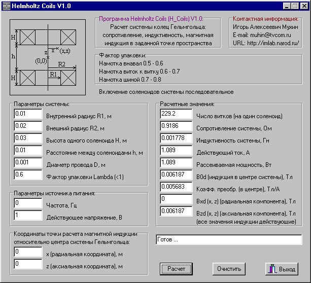
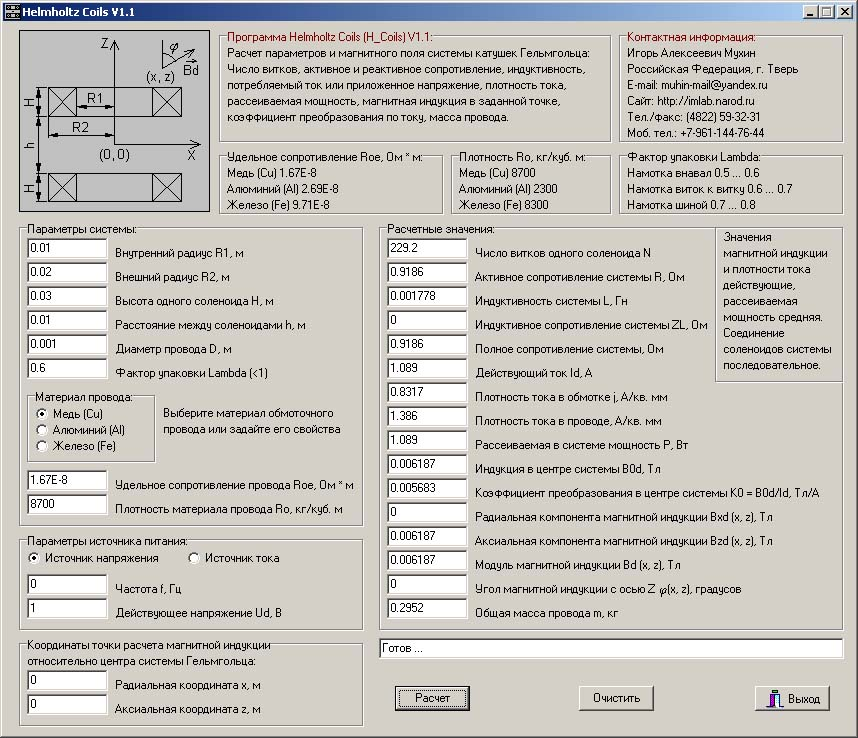
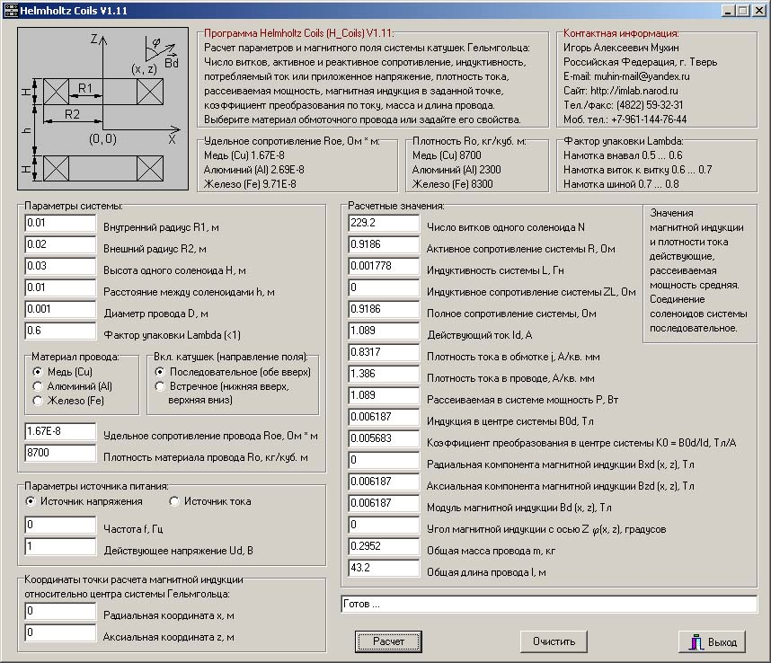

H_Coils: Программа для
расчета параметров и магнитного поля системы колец Гельмгольца:
активное сопротивление, индуктивность, потребляемый ток, рассеиваемая мощность,
магнитная индукция в центре и в заданной точке пространства
Катушки Гельмгольца [9] используются для получения практически однородного магнитного поля. В идеальном случае они представляют собой два одинаковых кольцевых витка, соединенных между собой последовательно и расположенных на расстоянии радиуса витка друг от друга. Обычно катушки Гельмгольца состоят из двух катушек, на которых намотано некоторое количество витков, причем толщина катушки должна быть много меньше их радиуса. В реальных системах толщина катушек может быть сравнима с их радиусом. Таким образом, можно считать системой колец Гельмгольца две соосно расположенных одинаковых катушки, расстояние между центрами которых приблизительно равно их среднему радиусу. В центре системы имеется зона однородного магнитного поля с осевым и радиальным доступом, что может быть использовано для измерительных целей, для калибровки датчиков магнитной индукции и т. д.
Windows-версия программы Helmholtz Coils (H_Coils) версия 1.0

Рис. 1. Внешний вид окна программы H_Coils (версия 1.0).
Входные данные:
R1 - внутренний радиус соленоида системы (радиус отверстия), м
R2 - внешний радиус соленоида системы, м
H - высота одного соленоида системы, м
h - расстояние между соленоидами системы, м
D - диаметр обмоточного провода без изоляции (для проводов прямоугольного
сечения производится пересчет по формуле D=(4s/p)1/2,
где s - площадь поперечного сечения провода, м2), м
Lambda - фактор упаковки (отношение площади, занятой проводом в поперечном
сечении соленоида без учета изоляции, к площади поперечного сечения соленоида)
[8]
Частота приложенного напряжения, Гц
Действующее значение приложенного напряжения, В
x - радиальная координата (радиус) точки (относительно центра системы - точки
(0, 0)), в которой требуется рассчитать составляющие магнитной индукции, м
z - аксиальная координата (высота) точки (относительно центра системы - точки
(0, 0)), в которой требуется рассчитать составляющие магнитной индукции, м
Выходные данные:
Число витков одного соленоида системы
Активное сопротивление системы (условия нормальные, обмоточный провод медный,
соединение соленоидов системы последовательное), Ом
Индуктивность системы, Гн
Действующее значение тока через систему, А
Рассеиваемая в системе мощность, Вт
B0d - магнитная индукция (действующее значение) в центре системы (точка (0, 0)),
Тл
Коэффициент преобразования в центре системы (магнитная индукция в расчете на
единицу действующего тока), Тл/А
Bxd (x, z) - радиальная составляющая магнитной индукции (действующее значение) в
точке с координатами (x, z) относительно центра системы (точки (0, 0)), Тл
Bzd (x, z) - аксиальная составляющая магнитной индукции (действующее значение) в
точке с координатами (x, z) относительно центра системы (точки (0, 0)), Тл
Программа H_Coils разработана на основе программы Coil [1] с использованием методики расчета индуктивности системы двух соосных электрически последовательно соединенных цилиндрических соленоидов [5] и позволяет рассчитывать по заданным геометрическим размерам системы колец Гельмгольца (R1, R2, H, h), диаметру провода D и фактору упаковки Lambda: число витков одного соленоида системы, активное сопротивление системы (по меди), индуктивность системы, действующее значение тока в обмотках при заданном действующем напряжении и частоте источника питания, рассеиваемую при этом мощность, величину магнитной индукции (Bxd, Bzd) в заданной точке пространства (x, z), величину магнитной индукции B0 в центре системы (0, 0), а также коэффициент преобразования в центре системы. Магнитная индукция рассчитывается с использованием закона Био-Савара-Лапласа [2, 3, 10]. Расчеты производятся в системе СИ. Результаты выводятся на экран монитора.
Примечание: Для действующего значения питающего напряжения рассчитываются действующие значения выходных данных, а рассеиваемая мощность является средней. Собственно, программа позволяет в качестве входного подразумевать любое по своему характеру значение напряжения (мгновенное, среднее, амплитудное). Ему при вычислениях будут соответствовать такие же по характеру выходные данные (т. е., например, если подразумевать под напряжением источника его амплитудное значение, то рассчитанные значения магнитной индукции тоже нужно считать амплитудными), но рассеиваемая мощность при этом, фактически, является мгновенной.
Демонстрационная Windows-версия программы H_Coils V1.0: H_Coils10d.rar (~92 Кбайт)
В демонстрационной Windows-версии программы Helmholtz Coils (H_Coils10d) производится расчет параметров системы колец Гельмгольца (число витков одного соленоида, активное сопротивление системы (по меди), индуктивность системы, действующее значение тока в обмотках при заданном действующем напряжении и частоте источника питания, рассеиваемая мощность), а также магнитной индукции в центре и на оси системы и коэффициента преобразования в центре системы. Результаты выводятся на экран монитора. Windows-версия предназначена для работы с операционными системами (ОС) Windows 3.1, Windows 95, 98 и XP (с другими ОС семейства Windows не проверялась).
Файл H_Coils10d.rar необходимо распаковать в заранее созданную папку. Упаковка производилась с помощью архиватора WinRar 2.80. Результат распаковки: H_Coils10d.exe - исполняемый файл программы. После запуска программы можно вводить входные данные и производить расчет нажатием соответствующей кнопки. Входные данные (R1 - внутренний радиус соленоида, R2 - внешний радиус соленоида, H - высота одного соленоида, h - расстояние между соленоидами, D - диаметр обмоточного провода) необходимо вводить в метрах. Учитывайте принятый в ОС формат разделителя для десятичной дроби: точка или запятая ( например, 0.005 или 0,005). Если в ОС формат разделителя запятая, то ввод производится с запятой, в противном случае будет выдаваться сообщение об ошибке. Смена формата разделителя десятичной дроби в ОС: Мой компьютер - Панель управления - Язык и стандарты - Настройка - Установить точку в качестве разделителя целой и дробной части. Фактор упаковки Lambda может изменяться приблизительно от 0.5 для намотки круглым проводом внавал до 0.75 при очень тщательной намотке круглым проводом виток к витку. Проверить правильность расчетов можно по рис. 1.
Windows-версия программы Helmholtz Coils (H_Coils) версия 1.1

Рис. 2. Внешний вид окна программы H_Coils (версия 1.1).
Входные данные:
R1 - внутренний радиус соленоида системы (радиус отверстия), м
R2 - внешний радиус соленоида системы, м
H - высота одного соленоида системы, м
h - расстояние между соленоидами системы, м
D - диаметр обмоточного провода без изоляции (для проводов прямоугольного
сечения производится пересчет по формуле D=(4s/p)1/2,
где s - площадь поперечного сечения провода, м2), м
Lambda - фактор упаковки (отношение площади, занятой проводом в поперечном
сечении соленоида без учета изоляции, к площади поперечного сечения соленоида)
[8]
Свойства обмоточного провода (удельное электрическое сопротивление и плотность)
можно либо задать вручную, либо выбрать из трех вариантов: медь, алюминий,
железо
Roe - удельное электрическое сопротивление обмоточного
провода, Ом ∙ м
Ro - плотность материала обмоточного провода, кг/м3
f - частота приложенного напряжения, Гц
Ud - действующее значение приложенного напряжения, В
Id - действующее значение тока через систему, А
x - радиальная координата (радиус) точки (относительно центра системы - точки
(0, 0)), в которой требуется рассчитать составляющие магнитной индукции, м
z - аксиальная координата (высота) точки (относительно центра системы - точки
(0, 0)), в которой требуется рассчитать составляющие магнитной индукции, м
Выходные данные:
N - число витков одного соленоида
R - активное сопротивление системы (соединение
соленоидов системы последовательное), Ом
L - индуктивность системы, Гн
Индуктивное (ZL) и полное сопротивление системы, Ом
Действующее значение тока через систему Id, А или
действующее значение приложенного напряжения Ud, В
Плотность тока в обмотке j и плотность тока в проводе,
А/мм2
P - рассеиваемая в системе мощность, Вт
B0d - магнитная индукция (действующее значение) в центре системы (точка (0, 0)),
Тл
K0 - коэффициент преобразования в центре системы
(магнитная индукция в расчете на единицу действующего тока), Тл/А
Bxd (x, z) - радиальная составляющая магнитной индукции (действующее значение) в
точке с координатами (x, z) относительно центра системы (точки (0, 0)), Тл
Bzd (x, z) - аксиальная составляющая магнитной индукции (действующее значение) в
точке с координатами (x, z) относительно центра системы (точки (0, 0)), Тл
B (x, z) - модуль магнитной индукции (действующее
значение) в точке с координатами (x, z) относительно
центра системы (точки (0, 0)), Тл
f - угол, который образует
вектор магнитной индукции с осью Z в точке с
координатами (x, z) относительно центра системы (точки
(0, 0)), градусов
m - общая масса провода обмоточного провода в расчете
на два соленоида системы, кг
Отличительными особенностями версии 1.1 относительно 1.0 являются возможность задания свойств материала провода (удельное электрическое сопротивление и плотность), выбор между источником тока и источником приложенного напряжения, а также дополнительные рассчитываемые параметры (индуктивное и полное сопротивление, плотность тока в проводе и обмотке, модуль магнитной индукции в заданной точке пространства, угол вектора магнитной индукции с осью Z, масса провода). Расчеты производятся в системе СИ. Результаты выводятся на экран монитора.
Примечание: Для действующих значений входных величин (напряжения или тока) рассчитываются действующие значения выходных данных, а рассеиваемая мощность является средней. Собственно, программа позволяет в качестве входных подразумевать любые по своему характеру значения тока или напряжения (мгновенные, средние, амплитудные). Им при вычислениях будут соответствовать такие же по характеру выходные данные (т. е., например, если подразумевать под током источника его амплитудное значение, то рассчитанные значения магнитной индукции тоже нужно считать амплитудными), но рассеиваемая мощность при этом, фактически, является мгновенной.
Демонстрационная Windows-версия программы H_Coils V1.1: H_Coils11d.rar (~184 Кбайт)
В демонстрационной Windows-версии программы Helmholtz Coils версии 1.1 производится расчет всех параметров системы, как и в полной версии. Индукция магнитного поля рассчитывается только в центре системы. В качестве источника питания может быть выбран только источник напряжения. Результаты выводятся на экран монитора. Windows-версия разрабатывалась для работы с ОС Windows XP и Windows Vista (с другими ОС не проверялась).
Файл H_Coils11d.rar необходимо распаковать в заранее созданную папку. Упаковка производилась с помощью архиватора WinRar 3.60. Результат распаковки: H_Coils11d.exe - исполняемый файл программы. После запуска программы можно вводить входные данные и производить расчет нажатием соответствующей кнопки. Входные данные (R1 - внутренний радиус соленоида, R2 - внешний радиус соленоида, H - высота одного соленоида, h - расстояние между соленоидами, D - диаметр обмоточного провода) необходимо вводить в метрах . Учитывайте принятый в ОС формат разделителя для десятичной дроби: точка или запятая ( например, 0.005 или 0,005). Если в ОС формат разделителя запятая, то ввод производится с запятой, в противном случае будет выдаваться сообщение об ошибке. Смена формата разделителя десятичной дроби в ОС: Мой компьютер - Панель управления - Язык и стандарты - Настройка - Установить точку в качестве разделителя целой и дробной части. Корректность расчета можно оценить по вышеприведенному рис. 2.
Windows-версия программы Helmholtz Coils (H_Coils) версия 1.11

Рис. 3. Внешний вид окна программы H_Coils (версия 1.11).
Версия 1.11 позволяет рассчитывать параметры системы как в дипольном включении, когда поля катушек направлены в одну сторону, так и в квадрупольном при их встречном направлении. Помимо общей массы провода, необходимого для намотки обоих соленоидов системы, добавлен также и расчет его длины при заданном диаметре. Кроме того, версия программы нечувствительна к виду десятичного разделителя целой и дробной частей исходных данных (можно использовать как точку, так и запятую).
Скопированные файлы могут быть проверены на отсутствие вирусного кода в режиме on-line [7].
По вопросу получения полной версии программы обращайтесь к автору (см. раздел Контактная информация).
Ссылки:
06.11.2005
13.02.2006
22.06.2010
04.05.2016
09.02.2022
Альтернативные источники
энергии
Компьютеры и
Интернет
Магнитные поля
Механотронные системы
Перспективные
разработки
Электроника и
технология